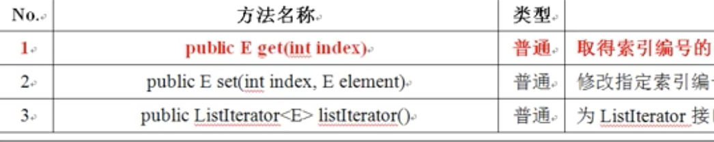
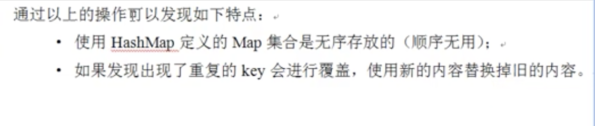
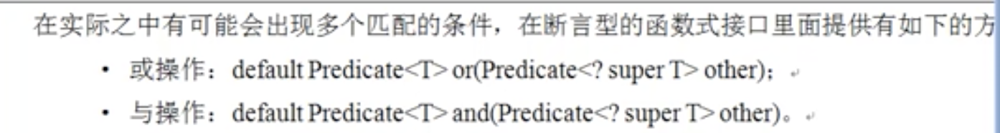

<!DOCTYPE html><html lang="zh-CN"><head><meta charset="utf-8"><meta http-equiv="X-UA-Compatible" content="IE=edge"><meta name="viewport" content="width=device-width, initial-scale=1"><meta name="author" content="JiaojiaoFu"><link rel="alternative" href="/atom.xml" title="姣姣的个人主页" type="application/atom+xml"><link rel="icon" href="/favicon.png"><title>Chapter 56 类集框架 - 姣姣的个人主页</title><link rel="stylesheet" href="/css/main.css" type="text/css">
<link rel="stylesheet" href="/js/fancybox/jquery.fancybox.min.css" type="text/css">
<!--[if lt IE 9]><script>(function(a,b){a="abbr article aside audio bdi canvas data datalist details dialog figcaption figure footer header hgroup main mark meter nav output progress section summary template time video".split(" ");for(b=a.length-1;b>=0;b--)document.createElement(a[b])})()</script><![endif]--><script src="/js/jquery-3.1.1.min.js" type="text/javascript"></script>
<script src="/js/fancybox/jquery.fancybox.min.js" type="text/javascript"></script>
</head><body style="opacity:0"><header class="head"><h1 class="head-title u-fl"><a href="/">姣姣的个人主页</a></h1><nav class="head-nav u-fr"><ul class="head-nav__list"><li class="head-nav__item"><a class="head-nav__link" href="/archives">カタログ/（目录）</a></li></ul></nav></header><main class="main"><article class="post"><header class="post__head"> <time class="post__time" datetime="2018-11-04T16:00:00.000Z">November 5, 2018</time><h1 class="post__title"><a href="/2018/11/05/Java_56_类集框架/">Chapter 56 类集框架</a></h1><div class="post__main echo"><p>类集就是 Java 数据结构的实现，类集就是动态对象数组。<br><a id="more"></a></p>
<h3 id="类集框架">类集框架</h3>
<p>类集就是 Java 数据结构的实现，类集就是动态对象数组；<br>类集里面有以下几个核心接口：</p>
<ul>
<li>Collection、List、Set</li>
<li>Map</li>
<li>Iterator，Enumeration</li>
</ul>
<h4 id="1-_Collection_接口（重点）">1. Collection 接口（重点）</h4>
<p>Collection 是整个类集中单值保存的最大父接口。每一次可以向集合中宝存一个对象。</p>
<ol>
<li>方法【重点】<br><br></li>
</ol>
<ul>
<li>为 Iterator 接口实例化<br>开发之中：add() 方法和 iterator() 两个方法使用几率是最高的。</li>
</ul>
<p>开发中很少直接使用 Collection 接口了，会使用它的两个子接口：List（允许重复）、Set（不允许重复）。</p>
<h4 id="2-_List_子接口">2. List 子接口</h4>
<p>最常用的子接口，功能扩展：<br><br></p>
<p>List 本身属于接口，想要使用的话用其子类 ArrayList（90%，或者用 Vector）</p>
<p><strong>示例</strong>：List 基本操作</p>
<figure class="highlight java"><table><tr><td class="gutter"><pre><div class="line">1</div><div class="line">2</div><div class="line">3</div><div class="line">4</div><div class="line">5</div><div class="line">6</div><div class="line">7</div><div class="line">8</div><div class="line">9</div><div class="line">10</div><div class="line">11</div><div class="line">12</div><div class="line">13</div><div class="line">14</div><div class="line">15</div><div class="line">16</div><div class="line">17</div><div class="line">18</div><div class="line">19</div><div class="line">20</div></pre></td><td class="code"><pre><div class="line"><span class="keyword">package</span> com.company;</div><div class="line"><span class="keyword">import</span> java.util.ArrayList;</div><div class="line"><span class="keyword">import</span> java.util.List;</div><div class="line"><span class="keyword">public</span> <span class="class"><span class="keyword">class</span> <span class="title">TestDemo</span> </span>{</div><div class="line">    <span class="keyword">public</span> <span class="keyword">static</span> <span class="keyword">void</span> <span class="title">main</span>(String[] args){</div><div class="line">        <span class="comment">// 设置了泛型，从而保证集合中所有的数据类型都一样</span></div><div class="line">        List&lt;String&gt; all = <span class="keyword">new</span> ArrayList&lt;String&gt;();</div><div class="line">        System.out.println(<span class="string">"长度："</span> + all.size() + <span class="string">"、是否为空："</span> + all.isEmpty());</div><div class="line">        all.add(<span class="string">"Hello"</span>);</div><div class="line">        all.add(<span class="string">"Hello"</span>);  <span class="comment">// 重复元素</span></div><div class="line">        all.add(<span class="string">"World"</span>);</div><div class="line">        System.out.println(<span class="string">"长度："</span> + all.size() + <span class="string">"、是否为空："</span> + all.isEmpty());</div><div class="line">        <span class="comment">// Collection 接口定义了 size() 方法可以取得集合长度</span></div><div class="line">        <span class="comment">// List 子类扩充了 get() 方法可以根据索引取得对象</span></div><div class="line">        <span class="keyword">for</span>(<span class="keyword">int</span> i = <span class="number">0</span>; i &lt; all.size(); i++){</div><div class="line">            String str = all.get(i);   <span class="comment">// 取得索引数据</span></div><div class="line">            System.out.println(str);</div><div class="line">        }</div><div class="line">    }</div><div class="line">}</div></pre></td></tr></table></figure>

<p>List 集合保存的顺序是按照保存的顺序存放，允许重复，注意 List 子接口扩充有 get() 方法</p>
<p><strong>示例</strong>：在集合中保存对象</p>
<figure class="highlight java"><table><tr><td class="gutter"><pre><div class="line">1</div><div class="line">2</div><div class="line">3</div><div class="line">4</div><div class="line">5</div><div class="line">6</div><div class="line">7</div><div class="line">8</div><div class="line">9</div><div class="line">10</div><div class="line">11</div><div class="line">12</div><div class="line">13</div><div class="line">14</div><div class="line">15</div><div class="line">16</div><div class="line">17</div><div class="line">18</div><div class="line">19</div><div class="line">20</div><div class="line">21</div><div class="line">22</div><div class="line">23</div><div class="line">24</div><div class="line">25</div><div class="line">26</div><div class="line">27</div><div class="line">28</div><div class="line">29</div><div class="line">30</div><div class="line">31</div><div class="line">32</div><div class="line">33</div><div class="line">34</div><div class="line">35</div><div class="line">36</div><div class="line">37</div><div class="line">38</div><div class="line">39</div><div class="line">40</div><div class="line">41</div><div class="line">42</div><div class="line">43</div><div class="line">44</div><div class="line">45</div><div class="line">46</div></pre></td><td class="code"><pre><div class="line"><span class="keyword">package</span> com.company;</div><div class="line"><span class="keyword">import</span> java.util.ArrayList;</div><div class="line"><span class="keyword">import</span> java.util.List;</div><div class="line">class Book{</div><div class="line">    <span class="keyword">private</span> String title;</div><div class="line">    <span class="keyword">private</span> <span class="keyword">double</span> price;</div><div class="line"></div><div class="line">    <span class="keyword">public</span> <span class="title">Book</span>(String title, <span class="keyword">double</span> price) {</div><div class="line">        <span class="keyword">this</span>.title = title;</div><div class="line">        <span class="keyword">this</span>.price = price;</div><div class="line">    }</div><div class="line">    <span class="annotation">@Override</span></div><div class="line">    <span class="keyword">public</span> <span class="keyword">boolean</span> <span class="title">equals</span>(Object obj) {</div><div class="line">        <span class="keyword">if</span>(obj  == <span class="keyword">null</span>){</div><div class="line">            <span class="keyword">return</span> <span class="keyword">false</span>;</div><div class="line">        }</div><div class="line">        <span class="keyword">if</span>(obj == <span class="keyword">this</span>){</div><div class="line">            <span class="keyword">return</span> <span class="keyword">true</span>;</div><div class="line">        }</div><div class="line">        <span class="keyword">if</span>(!(obj <span class="keyword">instanceof</span> Book)){</div><div class="line">            <span class="keyword">return</span> <span class="keyword">false</span>;</div><div class="line">        }</div><div class="line">        Book book = (Book)obj;</div><div class="line">        <span class="keyword">if</span>(<span class="keyword">this</span>.title.equals(book.title) && <span class="keyword">this</span>.price == book.price){</div><div class="line">            <span class="keyword">return</span> <span class="keyword">true</span>;</div><div class="line">        }</div><div class="line">        <span class="keyword">return</span> <span class="keyword">false</span>;</div><div class="line"></div><div class="line">    }</div><div class="line"></div><div class="line">    <span class="annotation">@Override</span></div><div class="line">    <span class="keyword">public</span> String <span class="title">toString</span>() {</div><div class="line">        <span class="keyword">return</span> <span class="string">"书名："</span> + <span class="keyword">this</span>.title + <span class="string">"、价格为："</span> + <span class="keyword">this</span>.price + <span class="string">"\n"</span>;</div><div class="line">    }</div><div class="line">}</div><div class="line"><span class="keyword">public</span> <span class="class"><span class="keyword">class</span> <span class="title">TestDemo</span> </span>{</div><div class="line">    <span class="keyword">public</span> <span class="keyword">static</span> <span class="keyword">void</span> <span class="title">main</span>(String[] args){</div><div class="line">        List&lt;Book&gt; all = <span class="keyword">new</span> ArrayList&lt;Book&gt;();</div><div class="line">        all.add(<span class="keyword">new</span> Book(<span class="string">"Java开发"</span>,<span class="number">79.8</span>));</div><div class="line">        all.add(<span class="keyword">new</span> Book(<span class="string">"JSP开发"</span>,<span class="number">69.8</span>));</div><div class="line">        all.add(<span class="keyword">new</span> Book(<span class="string">"Oracle开发"</span>,<span class="number">89.8</span>));</div><div class="line">        <span class="comment">// 任何情况下集合数据的删除和内容的查询都必须提供 equals() 方法</span></div><div class="line">        all.remove(<span class="keyword">new</span> Book(<span class="string">"JSP开发"</span>,<span class="number">69.8</span>));</div><div class="line">        System.out.println(all);</div><div class="line">    }</div><div class="line">}</div></pre></td></tr></table></figure>

<p>任何情况下集合数据的删除和内容的查询都必须提供 equals() 方法</p>
<p>Vector 是旧的类，Vector 与 ArrayList 的区别：</p>
<ol>
<li>推出时间：ArrayList 是 JDK1.2 之后出来的，Vector 是从 JDK1.0 之后开始使用</li>
<li>性能：ArrayList 采用异步处理，Vector 采用同步处理</li>
<li>数据安全：ArrayList 是非线程安全的，Vector 是线程安全的</li>
<li>输出：ArrayList 支持 Iterator、ListIterator、foreach，Vector 除了支持以上三个外还支持 Enumeration</li>
</ol>
<p>总结：</p>
<ul>
<li>List 中的数据保存顺序就是数据添加的顺序</li>
<li>List 集合中可以有重复的元素</li>
<li>List 子接口比 Collection 扩充了 get() 方法</li>
<li>List 选择子类就使用 ArrayList 接口。</li>
</ul>
<h4 id="3-_Set_接口">3. Set 接口</h4>
<p>Collection 的另一个常用子接口（20%）。Set 接口只是简单地继承了 Collection 接口，并没有大量的扩充，因此没有 List 中的 get() 方法。</p>
<p>Set 接口下有两个常用子类：HashSet、TreeSet</p>
<ul>
<li>HashSet: 集合没有重复元素（Set 接口的特征），集合是无序的，HashSet 子类的特征是无序排列。</li>
<li>TreeSet ：没有重复数据，保存的内容自动排序</li>
</ul>
<p>集合是一个动态的对象数组，想为一组对象进行排序，在 Java 中必须使用比较器<br>必须实现 Comparable 接口。</p>
<p>TreeSet 特点</p>
<ul>
<li>TreeSet 是根据 Comparable 接口中的 compareTo() 方法来判断数据是否重复，如果返回 0 ，就认为是重复数据，不会被保存。因此在 覆写 compareTo() 时全部属性都要参与比较。</li>
</ul>
<figure class="highlight java"><table><tr><td class="gutter"><pre><div class="line">1</div><div class="line">2</div><div class="line">3</div><div class="line">4</div><div class="line">5</div><div class="line">6</div><div class="line">7</div><div class="line">8</div><div class="line">9</div><div class="line">10</div><div class="line">11</div><div class="line">12</div><div class="line">13</div><div class="line">14</div><div class="line">15</div><div class="line">16</div><div class="line">17</div><div class="line">18</div><div class="line">19</div><div class="line">20</div><div class="line">21</div><div class="line">22</div><div class="line">23</div><div class="line">24</div><div class="line">25</div><div class="line">26</div><div class="line">27</div><div class="line">28</div><div class="line">29</div><div class="line">30</div><div class="line">31</div><div class="line">32</div><div class="line">33</div><div class="line">34</div><div class="line">35</div><div class="line">36</div><div class="line">37</div></pre></td><td class="code"><pre><div class="line"><span class="keyword">package</span> com.company;</div><div class="line"><span class="keyword">import</span> java.util.Set;</div><div class="line"><span class="keyword">import</span> java.util.TreeSet;</div><div class="line">class Book implements Comparable&lt;Book&gt;{</div><div class="line">    <span class="keyword">private</span> String title;</div><div class="line">    <span class="keyword">private</span> <span class="keyword">double</span> price;</div><div class="line"></div><div class="line">    <span class="keyword">public</span> <span class="title">Book</span>(String title, <span class="keyword">double</span> price) {</div><div class="line">        <span class="keyword">this</span>.title = title;</div><div class="line">        <span class="keyword">this</span>.price = price;</div><div class="line">    }</div><div class="line">    <span class="annotation">@Override</span></div><div class="line">    <span class="keyword">public</span> String <span class="title">toString</span>() {</div><div class="line">        <span class="keyword">return</span> <span class="string">"书名："</span> + <span class="keyword">this</span>.title + <span class="string">"、价格为："</span> + <span class="keyword">this</span>.price + <span class="string">"\n"</span>;</div><div class="line">    }</div><div class="line"></div><div class="line">    <span class="annotation">@Override</span></div><div class="line">    <span class="keyword">public</span> <span class="keyword">int</span> <span class="title">compareTo</span>(Book o) {</div><div class="line">        <span class="keyword">if</span>(<span class="keyword">this</span>.price &gt; o.price){</div><div class="line">            <span class="keyword">return</span> <span class="number">1</span>;</div><div class="line">        }<span class="keyword">else</span> <span class="keyword">if</span>(<span class="keyword">this</span>.price &lt; o.price){</div><div class="line">            <span class="keyword">return</span> -<span class="number">1</span>;</div><div class="line">        }<span class="keyword">else</span>{</div><div class="line">            <span class="comment">// 调用 String 类的 compareTo() 方法</span></div><div class="line">            <span class="keyword">return</span> <span class="keyword">this</span>.title.compareTo(o.title);</div><div class="line">        }</div><div class="line">    }</div><div class="line">}</div><div class="line"><span class="keyword">public</span> <span class="class"><span class="keyword">class</span> <span class="title">TestDemo</span> </span>{</div><div class="line">    <span class="keyword">public</span> <span class="keyword">static</span> <span class="keyword">void</span> <span class="title">main</span>(String[] args){</div><div class="line">        Set&lt;Book&gt; all = <span class="keyword">new</span> TreeSet&lt;Book&gt;();</div><div class="line">        all.add(<span class="keyword">new</span> Book(<span class="string">"Java开发"</span>,<span class="number">79.8</span>));</div><div class="line">        all.add(<span class="keyword">new</span> Book(<span class="string">"JSP开发"</span>,<span class="number">69.8</span>));</div><div class="line">        all.add(<span class="keyword">new</span> Book(<span class="string">"Oracle开发"</span>,<span class="number">79.8</span>));</div><div class="line">        System.out.println(all);</div><div class="line">    }</div><div class="line">}</div></pre></td></tr></table></figure>

<p>compareTo() 可以使 TreeSet 中没有重复，但是换成 HashSet 就不能判断重复了。</p>
<h4 id="4-_关于重复元素的说明">4. 关于重复元素的说明</h4>
<p>Comparable 接口只能负责 TreeSet 子类进行重复元素的判断（在排序时进行判断，HashSet 不进行排序因此无法判断），它并不是用于重复元素验证的操作。</p>
<p>如果想判断重复元素只能依靠 Object 类中提供的方法：</p>
<ul>
<li>取得哈希码： public int hashCode()<br>先判断对象的 哈希码是否相同，依靠哈希码取得一个对象的内容；</li>
<li>对象比较：public boolean equals(Object obj)<br>再将对象的属性依次进行比较</li>
</ul>
<p><strong>示例</strong>：利用编译器自动生成 hashCode() 和 equals() 方法。</p>
<figure class="highlight java"><table><tr><td class="gutter"><pre><div class="line">1</div><div class="line">2</div><div class="line">3</div><div class="line">4</div><div class="line">5</div><div class="line">6</div><div class="line">7</div><div class="line">8</div><div class="line">9</div><div class="line">10</div><div class="line">11</div><div class="line">12</div><div class="line">13</div><div class="line">14</div><div class="line">15</div><div class="line">16</div><div class="line">17</div><div class="line">18</div><div class="line">19</div><div class="line">20</div><div class="line">21</div><div class="line">22</div><div class="line">23</div><div class="line">24</div><div class="line">25</div><div class="line">26</div><div class="line">27</div><div class="line">28</div><div class="line">29</div><div class="line">30</div><div class="line">31</div><div class="line">32</div><div class="line">33</div><div class="line">34</div><div class="line">35</div><div class="line">36</div><div class="line">37</div><div class="line">38</div><div class="line">39</div><div class="line">40</div><div class="line">41</div><div class="line">42</div><div class="line">43</div><div class="line">44</div><div class="line">45</div><div class="line">46</div></pre></td><td class="code"><pre><div class="line"><span class="keyword">package</span> com.company;</div><div class="line"><span class="keyword">import</span> java.util.HashSet;</div><div class="line"><span class="keyword">import</span> java.util.Set;</div><div class="line"><span class="keyword">import</span> java.util.TreeSet;</div><div class="line">class Book{</div><div class="line">    <span class="keyword">private</span> String title;</div><div class="line">    <span class="keyword">private</span> <span class="keyword">double</span> price;</div><div class="line"></div><div class="line">    <span class="keyword">public</span> <span class="title">Book</span>(String title, <span class="keyword">double</span> price) {</div><div class="line">        <span class="keyword">this</span>.title = title;</div><div class="line">        <span class="keyword">this</span>.price = price;</div><div class="line">    }</div><div class="line">    <span class="annotation">@Override</span></div><div class="line">    <span class="keyword">public</span> String <span class="title">toString</span>() {</div><div class="line">        <span class="keyword">return</span> <span class="string">"书名："</span> + <span class="keyword">this</span>.title + <span class="string">"、价格为："</span> + <span class="keyword">this</span>.price + <span class="string">"\n"</span>;</div><div class="line">    }</div><div class="line">    <span class="annotation">@Override</span></div><div class="line">    <span class="keyword">public</span> <span class="keyword">boolean</span> <span class="title">equals</span>(Object o) {</div><div class="line">        <span class="keyword">if</span> (<span class="keyword">this</span> == o) <span class="keyword">return</span> <span class="keyword">true</span>;</div><div class="line">        <span class="keyword">if</span> (o == <span class="keyword">null</span> || getClass() != o.getClass()) <span class="keyword">return</span> <span class="keyword">false</span>;</div><div class="line"></div><div class="line">        Book book = (Book) o;</div><div class="line"></div><div class="line">        <span class="keyword">if</span> (Double.compare(book.price, price) != <span class="number">0</span>) <span class="keyword">return</span> <span class="keyword">false</span>;</div><div class="line">        <span class="keyword">return</span> title != <span class="keyword">null</span> ? title.equals(book.title) : book.title == <span class="keyword">null</span>;</div><div class="line">    }</div><div class="line">    <span class="annotation">@Override</span></div><div class="line">    <span class="keyword">public</span> <span class="keyword">int</span> <span class="title">hashCode</span>() {</div><div class="line">        <span class="keyword">int</span> result;</div><div class="line">        <span class="keyword">long</span> temp;</div><div class="line">        result = title != <span class="keyword">null</span> ? title.hashCode() : <span class="number">0</span>;</div><div class="line">        temp = Double.doubleToLongBits(price);</div><div class="line">        result = <span class="number">31</span> * result + (<span class="keyword">int</span>) (temp ^ (temp &gt;&gt;&gt; <span class="number">32</span>));</div><div class="line">        <span class="keyword">return</span> result;</div><div class="line">    }</div><div class="line">}</div><div class="line"><span class="keyword">public</span> <span class="class"><span class="keyword">class</span> <span class="title">TestDemo</span> </span>{</div><div class="line">    <span class="keyword">public</span> <span class="keyword">static</span> <span class="keyword">void</span> <span class="title">main</span>(String[] args){</div><div class="line">        Set&lt;Book&gt; all = <span class="keyword">new</span> HashSet&lt;Book&gt;();</div><div class="line">        all.add(<span class="keyword">new</span> Book(<span class="string">"Java开发"</span>,<span class="number">79.8</span>));</div><div class="line">        all.add(<span class="keyword">new</span> Book(<span class="string">"JSP开发"</span>,<span class="number">69.8</span>));</div><div class="line">        all.add(<span class="keyword">new</span> Book(<span class="string">"Oracle开发"</span>,<span class="number">79.8</span>));</div><div class="line">        all.add(<span class="keyword">new</span> Book(<span class="string">"Oracle开发"</span>,<span class="number">79.8</span>));</div><div class="line">        System.out.println(all);</div><div class="line">    }</div><div class="line">}</div></pre></td></tr></table></figure>

<p>以后在非排序的情况下，只要是判断重复元素依靠的永远是 hashcode() 和 equals() 方法。</p>
<p>Set 总结</p>
<ol>
<li>在开发中，Set 接口绝不是首选，如果真的要使用也建议使用 HashSet 子类</li>
<li>Comparable 这种比较器只会存在在 Java 的理论范畴中，例如要进行 TreeSet</li>
<li>Set 不管如何操作，必须保证一个前提：数据不能够重复</li>
</ol>
<h4 id="5-_集合输出">5. 集合输出</h4>
<p>五种方法：<strong>Iterator</strong>（95%），ListIterator（0.05%），<strong>Enumeration</strong>（5%），foreach（0.05%）</p>
<ol>
<li>迭代输出 Iterator 接口【重点】</li>
</ol>
<figure class="highlight java"><table><tr><td class="gutter"><pre><div class="line">1</div><div class="line">2</div><div class="line">3</div><div class="line">4</div></pre></td><td class="code"><pre><div class="line"><span class="keyword">public</span> <span class="class"><span class="keyword">interface</span> <span class="title">Iterator</span>&lt;<span class="title">E</span>&gt;</span>{</div><div class="line">    <span class="keyword">public</span> <span class="keyword">boolean</span> <span class="title">hasNext</span>();</div><div class="line">    <span class="keyword">public</span> E <span class="title">next</span>();</div><div class="line">}</div></pre></td></tr></table></figure>

<p>之前见到的 Scanner 类是 Iterator 的子类</p>
<p>Iterator 是一个接口，如果想要取得本接口实例化只能依靠 Collection 接口，Collection 接口中有一个方法：<br><code>public Iterator &lt;E&gt; iterator();</code></p>
<figure class="highlight java"><table><tr><td class="gutter"><pre><div class="line">1</div><div class="line">2</div><div class="line">3</div><div class="line">4</div><div class="line">5</div><div class="line">6</div><div class="line">7</div><div class="line">8</div><div class="line">9</div><div class="line">10</div><div class="line">11</div><div class="line">12</div><div class="line">13</div><div class="line">14</div><div class="line">15</div><div class="line">16</div><div class="line">17</div><div class="line">18</div></pre></td><td class="code"><pre><div class="line"><span class="keyword">package</span> com.company;</div><div class="line"><span class="keyword">import</span> java.util.HashSet;</div><div class="line"><span class="keyword">import</span> java.util.Iterator;</div><div class="line"><span class="keyword">import</span> java.util.Set;</div><div class="line"></div><div class="line"><span class="keyword">public</span> <span class="class"><span class="keyword">class</span> <span class="title">TestDemo</span> </span>{</div><div class="line">    <span class="keyword">public</span> <span class="keyword">static</span> <span class="keyword">void</span> <span class="title">main</span>(String[] args){</div><div class="line">        Set&lt;String&gt; all = <span class="keyword">new</span> HashSet&lt;String&gt;();</div><div class="line">        all.add(<span class="string">"Hello"</span>);</div><div class="line">        all.add(<span class="string">"world"</span>);</div><div class="line">        all.add(<span class="string">"world"</span>);</div><div class="line">        Iterator&lt;String&gt; iterator = all.iterator();</div><div class="line">        <span class="keyword">while</span>(iterator.hasNext()){</div><div class="line">            String str = iterator.next();</div><div class="line">            System.out.println(str);</div><div class="line">        }</div><div class="line">    }</div><div class="line">}</div></pre></td></tr></table></figure>

<ol start="2">
<li>双向迭代：ListIterator（了解）<br>Iterator 只能由前向后输出，ListIterator 可以实现由前向后输出，由后向前输出。</li>
</ol>
<p>有两个核心方法：</p>
<ul>
<li>判断是否有前一个元素：<code>public boolean hasPrevious();</code></li>
<li>取得前一个元素：<code>public E previous()</code></li>
</ul>
<p>ListIterator 是专门为 List 子接口定义的输出接口，方法：<br><code>public ListIterator&lt;E&gt; listIterator()</code>  </p>
<p><strong>范例</strong>：完成双向迭代</p>
<figure class="highlight java"><table><tr><td class="gutter"><pre><div class="line">1</div><div class="line">2</div><div class="line">3</div><div class="line">4</div><div class="line">5</div><div class="line">6</div><div class="line">7</div><div class="line">8</div><div class="line">9</div><div class="line">10</div><div class="line">11</div><div class="line">12</div><div class="line">13</div><div class="line">14</div><div class="line">15</div><div class="line">16</div><div class="line">17</div><div class="line">18</div><div class="line">19</div><div class="line">20</div><div class="line">21</div><div class="line">22</div></pre></td><td class="code"><pre><div class="line"><span class="keyword">package</span> com.company;</div><div class="line"><span class="keyword">import</span> java.util.*;</div><div class="line"></div><div class="line"><span class="keyword">public</span> <span class="class"><span class="keyword">class</span> <span class="title">TestDemo</span> </span>{</div><div class="line">    <span class="keyword">public</span> <span class="keyword">static</span> <span class="keyword">void</span> <span class="title">main</span>(String[] args){</div><div class="line">        List&lt;String&gt; all = <span class="keyword">new</span> ArrayList&lt;String&gt;();</div><div class="line">        all.add(<span class="string">"A"</span>);</div><div class="line">        all.add(<span class="string">"B"</span>);</div><div class="line">        all.add(<span class="string">"C"</span>);</div><div class="line">        ListIterator&lt;String&gt; iter = all.listIterator();</div><div class="line">        System.out.print(<span class="string">"由前向后输出："</span>);</div><div class="line">        <span class="keyword">while</span>(iter.hasNext()){</div><div class="line">            String str = iter.next();</div><div class="line">            System.out.print(str+<span class="string">"、"</span>);</div><div class="line">        }</div><div class="line">        System.out.print(<span class="string">"\n由后向前输出："</span>);</div><div class="line">        <span class="keyword">while</span>(iter.hasPrevious()){</div><div class="line">            String str = iter.previous();</div><div class="line">            System.out.print(str+<span class="string">"、"</span>);</div><div class="line">        }</div><div class="line">    }</div><div class="line">}</div></pre></td></tr></table></figure>

<p>如果想要由后向前输出，必须先要由前向后输出。</p>
<ol start="3">
<li>foreach 操作</li>
</ol>
<figure class="highlight java"><table><tr><td class="gutter"><pre><div class="line">1</div><div class="line">2</div><div class="line">3</div><div class="line">4</div><div class="line">5</div><div class="line">6</div><div class="line">7</div><div class="line">8</div><div class="line">9</div><div class="line">10</div><div class="line">11</div><div class="line">12</div><div class="line">13</div><div class="line">14</div></pre></td><td class="code"><pre><div class="line"><span class="keyword">package</span> com.company;</div><div class="line"><span class="keyword">import</span> java.util.*;</div><div class="line"></div><div class="line"><span class="keyword">public</span> <span class="class"><span class="keyword">class</span> <span class="title">TestDemo</span> </span>{</div><div class="line">    <span class="keyword">public</span> <span class="keyword">static</span> <span class="keyword">void</span> <span class="title">main</span>(String[] args){</div><div class="line">        List&lt;String&gt; all = <span class="keyword">new</span> ArrayList&lt;String&gt;();</div><div class="line">        all.add(<span class="string">"A"</span>);</div><div class="line">        all.add(<span class="string">"B"</span>);</div><div class="line">        all.add(<span class="string">"C"</span>);</div><div class="line">        <span class="keyword">for</span>(String str:all){</div><div class="line">            System.out.println(str);</div><div class="line">        }</div><div class="line">    }</div><div class="line">}</div></pre></td></tr></table></figure>

<p>foreach 不建议使用，初学阶段建议使用 Iterator</p>
<ol start="4">
<li>Enumeration 输出</li>
</ol>
<figure class="highlight java"><table><tr><td class="gutter"><pre><div class="line">1</div><div class="line">2</div></pre></td><td class="code"><pre><div class="line"><span class="keyword">public</span> <span class="keyword">boolean</span> <span class="title">hasMoreElements</span>();   <span class="comment">// 判断是否有下一个元素，等同于 hasNext()</span></div><div class="line"><span class="keyword">public</span> E <span class="title">nextElement</span>(); <span class="comment">// 取出当前元素，相当于 next()</span></div></pre></td></tr></table></figure>

<p>如果想要使用 Enumeration 接口的实例化对象只能依靠 Vector 子类，Vector 中定义有如下方法：</p>
<ul>
<li>取得 Enumeration 接口对象：<code>public Enumeration&lt;E&gt; elements()</code></li>
</ul>
<figure class="highlight java"><table><tr><td class="gutter"><pre><div class="line">1</div><div class="line">2</div><div class="line">3</div><div class="line">4</div><div class="line">5</div><div class="line">6</div><div class="line">7</div><div class="line">8</div><div class="line">9</div><div class="line">10</div><div class="line">11</div><div class="line">12</div><div class="line">13</div><div class="line">14</div><div class="line">15</div><div class="line">16</div></pre></td><td class="code"><pre><div class="line"><span class="keyword">package</span> com.company;</div><div class="line"><span class="keyword">import</span> java.util.*;</div><div class="line"></div><div class="line"><span class="keyword">public</span> <span class="class"><span class="keyword">class</span> <span class="title">TestDemo</span> </span>{</div><div class="line">    <span class="keyword">public</span> <span class="keyword">static</span> <span class="keyword">void</span> <span class="title">main</span>(String[] args){</div><div class="line">        Vector&lt;String&gt; all = <span class="keyword">new</span> Vector&lt;String&gt;();</div><div class="line">        all.add(<span class="string">"A"</span>);</div><div class="line">        all.add(<span class="string">"B"</span>);</div><div class="line">        all.add(<span class="string">"C"</span>);</div><div class="line">        Enumeration&lt;String&gt; enumeration = all.elements();</div><div class="line">        <span class="keyword">while</span>(enumeration.hasMoreElements()){</div><div class="line">            String str = enumeration.nextElement();</div><div class="line">            System.out.println(str);</div><div class="line">        }</div><div class="line">    }</div><div class="line">}</div></pre></td></tr></table></figure>

<p>在一些古老的操作中会使用到，所以还是要掌握。</p>
<h4 id="6-_Map_接口">6. Map 接口</h4>
<p>保存一对关联数据（key = value），Map 接口提供根据 key 值查找对应 value的操作。</p>
<p></p>
<figure class="highlight java"><table><tr><td class="gutter"><pre><div class="line">1</div><div class="line">2</div><div class="line">3</div><div class="line">4</div><div class="line">5</div><div class="line">6</div><div class="line">7</div><div class="line">8</div><div class="line">9</div><div class="line">10</div><div class="line">11</div><div class="line">12</div></pre></td><td class="code"><pre><div class="line"><span class="keyword">package</span> com.company;</div><div class="line"><span class="keyword">import</span> java.util.*;</div><div class="line"><span class="keyword">public</span> <span class="class"><span class="keyword">class</span> <span class="title">TestDemo</span> </span>{</div><div class="line">    <span class="keyword">public</span> <span class="keyword">static</span> <span class="keyword">void</span> <span class="title">main</span>(String[] args){</div><div class="line">        Map&lt;String,Integer&gt; map = <span class="keyword">new</span> HashMap&lt;String,Integer&gt;();</div><div class="line">        map.put(<span class="string">"一"</span>,<span class="number">1</span>);</div><div class="line">        map.put(<span class="string">"二"</span>,<span class="number">2</span>);</div><div class="line">        map.put(<span class="string">"三"</span>,<span class="number">3</span>);</div><div class="line">        map.put(<span class="string">"三"</span>,<span class="number">33</span>);</div><div class="line">        System.out.println(map);</div><div class="line">    }</div><div class="line">}</div></pre></td></tr></table></figure>

<p></p>
<p><strong>示例</strong>：Map 进行查询操作</p>
<figure class="highlight java"><table><tr><td class="gutter"><pre><div class="line">1</div><div class="line">2</div><div class="line">3</div><div class="line">4</div><div class="line">5</div><div class="line">6</div><div class="line">7</div><div class="line">8</div><div class="line">9</div><div class="line">10</div><div class="line">11</div><div class="line">12</div><div class="line">13</div><div class="line">14</div><div class="line">15</div><div class="line">16</div><div class="line">17</div><div class="line">18</div><div class="line">19</div><div class="line">20</div></pre></td><td class="code"><pre><div class="line"><span class="keyword">package</span> com.company;</div><div class="line"><span class="keyword">import</span> java.util.*;</div><div class="line"></div><div class="line"><span class="keyword">public</span> <span class="class"><span class="keyword">class</span> <span class="title">TestDemo</span> </span>{</div><div class="line">    <span class="keyword">public</span> <span class="keyword">static</span> <span class="keyword">void</span> <span class="title">main</span>(String[] args){</div><div class="line">        Map&lt;String,Integer&gt; map = <span class="keyword">new</span> HashMap&lt;String,Integer&gt;();</div><div class="line">        map.put(<span class="string">"一"</span>,<span class="number">1</span>);</div><div class="line">        map.put(<span class="string">"二"</span>,<span class="number">2</span>);</div><div class="line">        map.put(<span class="string">"三"</span>,<span class="number">3</span>);</div><div class="line">        map.put(<span class="keyword">null</span>,<span class="number">33</span>);</div><div class="line">        System.out.println(map);</div><div class="line">        <span class="comment">// 输出 1</span></div><div class="line">        System.out.println(map.get(<span class="string">"一"</span>));</div><div class="line">        <span class="comment">// 输出 null</span></div><div class="line">        System.out.println(map.get(<span class="string">"六"</span>));</div><div class="line">        <span class="comment">// 输出 33</span></div><div class="line">        System.out.println(map.get(<span class="keyword">null</span>));</div><div class="line"></div><div class="line">    }</div><div class="line">}</div></pre></td></tr></table></figure>

<p>通过以上代码可以看出：Map 存放数据的目的是为了信息的查找，Collection 存放数据是为了输出。</p>
<p>Hashtable 里面对 key 和 value 的数据都不允许设置为 null。</p>
<p>【问题】HashMap（90%） 与 Hashtable（10%） 的区别</p>
<ol>
<li>推出时间：HashMap 是 JDK1.2 之后出来的，Hashtable 是从 JDK1.0 之后开始使用</li>
<li>性能：HashMap 采用异步处理，Hashtable 采用同步处理</li>
<li>数据安全：HashMap 是非线程安全的，Hashtable 是线程安全的</li>
<li>设置 null ：HashMap 允许 key 或 value 值为 null；Hashtable 不允许设置 null</li>
</ol>
<h5 id="【重点】_Map_关于_Iterator_接口的输出">【重点】 Map 关于 Iterator 接口的输出</h5>
<p><br></p>
<p><br></p>
<p>【重点】<strong>示例</strong>：利用 Iterator 实现 Map 接口的输出</p>
<figure class="highlight java"><table><tr><td class="gutter"><pre><div class="line">1</div><div class="line">2</div><div class="line">3</div><div class="line">4</div><div class="line">5</div><div class="line">6</div><div class="line">7</div><div class="line">8</div><div class="line">9</div><div class="line">10</div><div class="line">11</div><div class="line">12</div><div class="line">13</div><div class="line">14</div><div class="line">15</div><div class="line">16</div><div class="line">17</div><div class="line">18</div></pre></td><td class="code"><pre><div class="line"><span class="keyword">package</span> com.company;</div><div class="line"><span class="keyword">import</span> java.util.*;</div><div class="line"></div><div class="line"><span class="keyword">public</span> <span class="class"><span class="keyword">class</span> <span class="title">TestDemo</span> </span>{</div><div class="line">    <span class="keyword">public</span> <span class="keyword">static</span> <span class="keyword">void</span> <span class="title">main</span>(String[] args){</div><div class="line">        Map&lt;String,Integer&gt; map = <span class="keyword">new</span> HashMap&lt;String,Integer&gt;();</div><div class="line">        map.put(<span class="string">"一"</span>,<span class="number">1</span>);</div><div class="line">        map.put(<span class="string">"二"</span>,<span class="number">2</span>);</div><div class="line">        map.put(<span class="string">"三"</span>,<span class="number">3</span>);</div><div class="line">        <span class="comment">// 将 Map 集合变为 Set 集合，目的是为了使用 iterator() 方法</span></div><div class="line">        Set&lt;Map.Entry&lt;String,Integer&gt;&gt; set = map.entrySet();</div><div class="line">        Iterator&lt;Map.Entry&lt;String,Integer&gt;&gt; iter = set.iterator();</div><div class="line">        <span class="keyword">while</span>(iter.hasNext()){</div><div class="line">            Map.Entry&lt;String,Integer&gt; me = iter.next();</div><div class="line">            System.out.println(me.getKey() + <span class="string">" = "</span> + me.getValue());</div><div class="line">        }</div><div class="line">    }</div><div class="line">}</div></pre></td></tr></table></figure>

<p>关于 Map 集合中 key 的说明：<br><br></p>
<p>在定义 Map 时首选的 key 是 String 类型，尽量不要使用自定义的类型。<br></p>
<h4 id="7-_Stack_子类">7. Stack 子类</h4>
<p>Stack 表示的是栈操作，是一种先进后出的结构。是 Vector 子类，不使用 Vector 的方法，使用自己的方法：<br></p>
<figure class="highlight java"><table><tr><td class="gutter"><pre><div class="line">1</div><div class="line">2</div><div class="line">3</div><div class="line">4</div><div class="line">5</div><div class="line">6</div><div class="line">7</div><div class="line">8</div><div class="line">9</div><div class="line">10</div><div class="line">11</div><div class="line">12</div><div class="line">13</div><div class="line">14</div><div class="line">15</div><div class="line">16</div><div class="line">17</div><div class="line">18</div><div class="line">19</div></pre></td><td class="code"><pre><div class="line"><span class="keyword">package</span> com.company;</div><div class="line"><span class="keyword">import</span> java.util.*;</div><div class="line"></div><div class="line"><span class="keyword">public</span> <span class="class"><span class="keyword">class</span> <span class="title">TestDemo</span> </span>{</div><div class="line">    <span class="keyword">public</span> <span class="keyword">static</span> <span class="keyword">void</span> <span class="title">main</span>(String[] args){</div><div class="line">        Stack&lt;String&gt; s = <span class="keyword">new</span> Stack&lt;String&gt;();</div><div class="line">        s.push(<span class="string">"A"</span>);</div><div class="line">        s.push(<span class="string">"B"</span>);</div><div class="line">        s.push(<span class="string">"C"</span>);</div><div class="line">        <span class="comment">// 输出 C</span></div><div class="line">        System.out.println(s.pop());</div><div class="line">        <span class="comment">// 输出 B</span></div><div class="line">        System.out.println(s.pop());</div><div class="line">        <span class="comment">// 输出 A</span></div><div class="line">        System.out.println(s.pop());</div><div class="line">        <span class="comment">// 异常 EmptyStackException</span></div><div class="line">        System.out.println(s.pop());</div><div class="line">    }</div><div class="line">}</div></pre></td></tr></table></figure>

<p>在进行栈操作的过程中，如果栈中没有数据了，那么无法继续出栈</p>
<h4 id="8-_Properties_类">8. Properties 类</h4>
<p>Properties 类是 Hashtable 的子类，主要是进行属性的操作（属性的最大特点是利用字符串设置 key 和 value）</p>
<p></p>
<p><br>在 Properties 类里面提供有数据的输出操作：<code>public void store(OutputStream out,String comment)</code>，comment 表示注释<br><br><strong>示例</strong>：设置属性、取得属性、将属性保存在文件里</p>
<figure class="highlight java"><table><tr><td class="gutter"><pre><div class="line">1</div><div class="line">2</div><div class="line">3</div><div class="line">4</div><div class="line">5</div><div class="line">6</div><div class="line">7</div><div class="line">8</div><div class="line">9</div><div class="line">10</div><div class="line">11</div><div class="line">12</div><div class="line">13</div><div class="line">14</div><div class="line">15</div><div class="line">16</div><div class="line">17</div><div class="line">18</div><div class="line">19</div><div class="line">20</div></pre></td><td class="code"><pre><div class="line"><span class="keyword">package</span> com.company;</div><div class="line"><span class="keyword">import</span> java.io.File;</div><div class="line"><span class="keyword">import</span> java.io.FileOutputStream;</div><div class="line"><span class="keyword">import</span> java.util.*;</div><div class="line"></div><div class="line"><span class="keyword">public</span> <span class="class"><span class="keyword">class</span> <span class="title">TestDemo</span> </span>{</div><div class="line">    <span class="keyword">public</span> <span class="keyword">static</span> <span class="keyword">void</span> <span class="title">main</span>(String[] args) <span class="keyword">throws</span> Exception {</div><div class="line">        Properties pro = <span class="keyword">new</span> Properties();</div><div class="line">        pro.setProperty(<span class="string">"BJ"</span>,<span class="string">"北京"</span>);</div><div class="line">        pro.setProperty(<span class="string">"TJ"</span>,<span class="string">"天津"</span>);</div><div class="line">        <span class="comment">// 输出 ：北京</span></div><div class="line">        System.out.println(pro.getProperty(<span class="string">"BJ"</span>));</div><div class="line">        <span class="comment">// 输出 null</span></div><div class="line">        System.out.println(pro.getProperty(<span class="string">"GZ"</span>));</div><div class="line">        <span class="comment">// 输出默认值：没有此记录</span></div><div class="line">        System.out.println(pro.getProperty(<span class="string">"GZ"</span>,<span class="string">"没有此记录"</span>));</div><div class="line">        <span class="comment">// 一般而言文件后缀可以随便设置，但是标准来讲，既然是属性文件，h后缀必须是"*.properties"，这样做也是为了与国际化对应</span></div><div class="line">        pro.store(<span class="keyword">new</span> FileOutputStream(<span class="keyword">new</span> File(<span class="string">"."</span> + File.separator + <span class="string">"area.properties"</span>)),<span class="string">"Area Info"</span>);</div><div class="line">    }</div><div class="line">}</div></pre></td></tr></table></figure>


<p></p>
<figure class="highlight java"><table><tr><td class="gutter"><pre><div class="line">1</div><div class="line">2</div><div class="line">3</div><div class="line">4</div><div class="line">5</div><div class="line">6</div><div class="line">7</div><div class="line">8</div><div class="line">9</div><div class="line">10</div><div class="line">11</div><div class="line">12</div></pre></td><td class="code"><pre><div class="line"><span class="keyword">package</span> com.company;</div><div class="line"><span class="keyword">import</span> java.io.File;</div><div class="line"><span class="keyword">import</span> java.io.FileInputStream;</div><div class="line"><span class="keyword">import</span> java.util.*;</div><div class="line"></div><div class="line"><span class="keyword">public</span> <span class="class"><span class="keyword">class</span> <span class="title">TestDemo</span> </span>{</div><div class="line">    <span class="keyword">public</span> <span class="keyword">static</span> <span class="keyword">void</span> <span class="title">main</span>(String[] args) <span class="keyword">throws</span> Exception {</div><div class="line">        Properties pro = <span class="keyword">new</span> Properties();</div><div class="line">        pro.load(<span class="keyword">new</span> FileInputStream(<span class="keyword">new</span> File(<span class="string">"."</span> + File.separator + <span class="string">"area.properties"</span>)));</div><div class="line">        System.out.println(pro.getProperty(<span class="string">"BJ"</span>));</div><div class="line">    }</div><div class="line">}</div></pre></td></tr></table></figure>

<p>对于属性文件，可以用 Properties 类读取，还可以使用 resourceBoundle 类读取，这是为什么要将后缀设置为 <code>*.properties</code> 的原因。</p>
<h4 id="9-_Collections工具类">9. Collections工具类</h4>
<p>集合的工具类：为集合追加数据，集合反转</p>
<figure class="highlight java"><table><tr><td class="gutter"><pre><div class="line">1</div><div class="line">2</div><div class="line">3</div><div class="line">4</div><div class="line">5</div><div class="line">6</div><div class="line">7</div><div class="line">8</div><div class="line">9</div><div class="line">10</div><div class="line">11</div><div class="line">12</div><div class="line">13</div></pre></td><td class="code"><pre><div class="line"><span class="keyword">package</span> com.company;</div><div class="line"><span class="keyword">import</span> java.util.*;</div><div class="line"></div><div class="line"><span class="keyword">public</span> <span class="class"><span class="keyword">class</span> <span class="title">TestDemo</span> </span>{</div><div class="line">    <span class="keyword">public</span> <span class="keyword">static</span> <span class="keyword">void</span> <span class="title">main</span>(String[] args) <span class="keyword">throws</span> Exception {</div><div class="line">        List&lt;String&gt; all = <span class="keyword">new</span> ArrayList&lt;String&gt;();</div><div class="line">        <span class="comment">// 为集合追加数据</span></div><div class="line">        Collections.addAll(all,<span class="string">"A"</span>,<span class="string">"B"</span>,<span class="string">"C"</span>,<span class="string">"D"</span>);</div><div class="line">        <span class="comment">// 集合反转</span></div><div class="line">        Collections.reverse(all);</div><div class="line">        System.out.println(all);</div><div class="line">    }</div><div class="line">}</div></pre></td></tr></table></figure>

<p></p>
<h4 id="9-_数据流：Stream_类">9. 数据流：Stream 类</h4>
<p>除了使用 Iterator 迭代取出数据并且处理，JDK1.8 之中提供了一个专门进行数据处理的类 Stream。这个类可以利用 Collection 接口提供的方法操作：<br><code>default Stream&lt;E&gt; stream()</code></p>
<p><strong>示例</strong>：取得 Stream 类对象</p>
<figure class="highlight java"><table><tr><td class="gutter"><pre><div class="line">1</div><div class="line">2</div><div class="line">3</div><div class="line">4</div><div class="line">5</div><div class="line">6</div><div class="line">7</div><div class="line">8</div><div class="line">9</div><div class="line">10</div><div class="line">11</div><div class="line">12</div><div class="line">13</div><div class="line">14</div><div class="line">15</div><div class="line">16</div></pre></td><td class="code"><pre><div class="line"><span class="keyword">package</span> com.company;</div><div class="line"><span class="keyword">import</span> java.util.*;</div><div class="line"><span class="keyword">import</span> java.util.stream.Stream;</div><div class="line"></div><div class="line"><span class="keyword">public</span> <span class="class"><span class="keyword">class</span> <span class="title">TestDemo</span> </span>{</div><div class="line">    <span class="keyword">public</span> <span class="keyword">static</span> <span class="keyword">void</span> <span class="title">main</span>(String[] args) <span class="keyword">throws</span> Exception {</div><div class="line">        List&lt;String&gt; all = <span class="keyword">new</span> ArrayList&lt;String&gt;();</div><div class="line">        all.add(<span class="string">"Hello"</span>);</div><div class="line">        all.add(<span class="string">"world"</span>);</div><div class="line">        all.add(<span class="string">"good"</span>);</div><div class="line">        <span class="comment">// 取得 Stream 类对象</span></div><div class="line">        Stream&lt;String&gt; stream = all.stream();</div><div class="line">        <span class="comment">// 取得数据个数</span></div><div class="line">        System.out.println(stream.count());</div><div class="line">    }</div><div class="line">}</div></pre></td></tr></table></figure>

<p>下面进行数据加工操作<br><strong>范例</strong></p>
<ul>
<li>Stream 类中提供一个消除重复的方法：public Stream<t> distinct()</t></li>
</ul>
<figure class="highlight java"><table><tr><td class="gutter"><pre><div class="line">1</div><div class="line">2</div><div class="line">3</div><div class="line">4</div><div class="line">5</div><div class="line">6</div><div class="line">7</div><div class="line">8</div><div class="line">9</div><div class="line">10</div><div class="line">11</div><div class="line">12</div><div class="line">13</div><div class="line">14</div><div class="line">15</div><div class="line">16</div><div class="line">17</div><div class="line">18</div><div class="line">19</div><div class="line">20</div><div class="line">21</div><div class="line">22</div><div class="line">23</div></pre></td><td class="code"><pre><div class="line"><span class="keyword">package</span> com.company;</div><div class="line"><span class="keyword">import</span> java.util.*;</div><div class="line"><span class="keyword">import</span> java.util.stream.Collectors;</div><div class="line"><span class="keyword">import</span> java.util.stream.Stream;</div><div class="line"></div><div class="line"><span class="keyword">public</span> <span class="class"><span class="keyword">class</span> <span class="title">TestDemo</span> </span>{</div><div class="line">    <span class="keyword">public</span> <span class="keyword">static</span> <span class="keyword">void</span> <span class="title">main</span>(String[] args) <span class="keyword">throws</span> Exception {</div><div class="line">        List&lt;String&gt; all = <span class="keyword">new</span> ArrayList&lt;String&gt;();</div><div class="line">        all.add(<span class="string">"Hello"</span>);</div><div class="line">        all.add(<span class="string">"world"</span>);</div><div class="line">        all.add(<span class="string">"good"</span>);</div><div class="line">        all.add(<span class="string">"Hello"</span>);</div><div class="line">        all.add(<span class="string">"world"</span>);</div><div class="line">        all.add(<span class="string">"good"</span>);</div><div class="line">        <span class="comment">// 取得 Stream 类对象</span></div><div class="line">        Stream&lt;String&gt; stream = all.stream();</div><div class="line">        <span class="comment">// 取得非重复数据个数</span></div><div class="line">        <span class="comment">//System.out.println(stream.distinct().count());</span></div><div class="line">        <span class="comment">// 去掉重复数据形成的新集合， Stream 流只能打开一次</span></div><div class="line">        List&lt;String&gt; newAll = stream.distinct().collect(Collectors.toList());</div><div class="line">        newAll.forEach(System.out :: println);</div><div class="line">    }</div><div class="line">}</div></pre></td></tr></table></figure>

<p>数据过滤：</p>
<figure class="highlight java"><table><tr><td class="gutter"><pre><div class="line">1</div><div class="line">2</div><div class="line">3</div><div class="line">4</div><div class="line">5</div><div class="line">6</div><div class="line">7</div><div class="line">8</div><div class="line">9</div><div class="line">10</div><div class="line">11</div><div class="line">12</div><div class="line">13</div><div class="line">14</div><div class="line">15</div><div class="line">16</div><div class="line">17</div><div class="line">18</div><div class="line">19</div><div class="line">20</div><div class="line">21</div><div class="line">22</div><div class="line">23</div><div class="line">24</div></pre></td><td class="code"><pre><div class="line"><span class="keyword">package</span> com.company;</div><div class="line"><span class="keyword">import</span> java.util.*;</div><div class="line"><span class="keyword">import</span> java.util.stream.Collectors;</div><div class="line"><span class="keyword">import</span> java.util.stream.Stream;</div><div class="line"></div><div class="line"><span class="keyword">public</span> <span class="class"><span class="keyword">class</span> <span class="title">TestDemo</span> </span>{</div><div class="line">    <span class="keyword">public</span> <span class="keyword">static</span> <span class="keyword">void</span> <span class="title">main</span>(String[] args) <span class="keyword">throws</span> Exception {</div><div class="line">        List&lt;String&gt; all = <span class="keyword">new</span> ArrayList&lt;String&gt;();</div><div class="line">        all.add(<span class="string">"Java"</span>);</div><div class="line">        all.add(<span class="string">"Android"</span>);</div><div class="line">        all.add(<span class="string">"Ios"</span>);</div><div class="line">        all.add(<span class="string">"jsp"</span>);</div><div class="line">        all.add(<span class="string">"ORACLE"</span>);</div><div class="line"></div><div class="line">        <span class="comment">// 取得 Stream 类对象</span></div><div class="line">        Stream&lt;String&gt; stream = all.stream();</div><div class="line">        <span class="comment">// 取得非重复数据个数</span></div><div class="line">        <span class="comment">//System.out.println(stream.distinct().count());</span></div><div class="line">        <span class="comment">// 去掉重复数据形成的新集合， Stream 流只能打开一次</span></div><div class="line">        <span class="comment">// 增加了数据过滤操作，使用了断言型的函数接口，使用了 String 类中的 contains() 方法</span></div><div class="line">        List&lt;String&gt; newAll = stream.distinct().filter((x) -&gt; x.contains(<span class="string">"a"</span>)).collect(Collectors.toList());</div><div class="line">        newAll.forEach(System.out :: println);</div><div class="line">    }</div><div class="line">}</div></pre></td></tr></table></figure>

<p></p>
<figure class="highlight java"><table><tr><td class="gutter"><pre><div class="line">1</div></pre></td><td class="code"><pre><div class="line">List&lt;String&gt; newAll = stream.distinct().map((x) -&gt; x.toLowerCase()).filter((x) -&gt; x.contains(<span class="string">"a"</span>)).collect(Collectors.toList());</div></pre></td></tr></table></figure>

<p></p>
<figure class="highlight java"><table><tr><td class="gutter"><pre><div class="line">1</div><div class="line">2</div></pre></td><td class="code"><pre><div class="line"><span class="comment">// 跳过两个，取两个数据</span></div><div class="line">List&lt;String&gt; newAll = stream.distinct().map((x) -&gt; x.toLowerCase()).skip(<span class="number">2</span>).limit(<span class="number">2</span>).collect(Collectors.toList());</div></pre></td></tr></table></figure>

<p></p>
<figure class="highlight java"><table><tr><td class="gutter"><pre><div class="line">1</div><div class="line">2</div><div class="line">3</div><div class="line">4</div><div class="line">5</div><div class="line">6</div><div class="line">7</div><div class="line">8</div><div class="line">9</div><div class="line">10</div><div class="line">11</div><div class="line">12</div><div class="line">13</div><div class="line">14</div><div class="line">15</div><div class="line">16</div><div class="line">17</div><div class="line">18</div><div class="line">19</div><div class="line">20</div></pre></td><td class="code"><pre><div class="line"><span class="keyword">package</span> com.company;</div><div class="line"><span class="keyword">import</span> java.util.*;</div><div class="line"><span class="keyword">import</span> java.util.stream.Stream;</div><div class="line"></div><div class="line"><span class="keyword">public</span> <span class="class"><span class="keyword">class</span> <span class="title">TestDemo</span> </span>{</div><div class="line">    <span class="keyword">public</span> <span class="keyword">static</span> <span class="keyword">void</span> <span class="title">main</span>(String[] args) <span class="keyword">throws</span> Exception {</div><div class="line">        List&lt;String&gt; all = <span class="keyword">new</span> ArrayList&lt;String&gt;();</div><div class="line">        all.add(<span class="string">"Java"</span>);</div><div class="line">        all.add(<span class="string">"Android"</span>);</div><div class="line">        all.add(<span class="string">"Ios"</span>);</div><div class="line">        all.add(<span class="string">"jsp"</span>);</div><div class="line">        all.add(<span class="string">"ORACLE"</span>);</div><div class="line"></div><div class="line">        <span class="comment">// 取得 Stream 类对象</span></div><div class="line">        Stream&lt;String&gt; stream = all.stream();</div><div class="line">        <span class="keyword">if</span>(stream.anyMatch((x) -&gt; x.contains(<span class="string">"jsp"</span>))){</div><div class="line">            System.out.println(<span class="string">"数据存在"</span>);</div><div class="line">        }</div><div class="line">    }</div><div class="line">}</div></pre></td></tr></table></figure>

<p>现在只判断了一个条件<br></p>
<p><strong>示例</strong>：设置多个条件</p>
<figure class="highlight java"><table><tr><td class="gutter"><pre><div class="line">1</div><div class="line">2</div><div class="line">3</div><div class="line">4</div><div class="line">5</div><div class="line">6</div><div class="line">7</div><div class="line">8</div><div class="line">9</div><div class="line">10</div><div class="line">11</div><div class="line">12</div><div class="line">13</div><div class="line">14</div><div class="line">15</div><div class="line">16</div><div class="line">17</div><div class="line">18</div><div class="line">19</div><div class="line">20</div><div class="line">21</div><div class="line">22</div><div class="line">23</div></pre></td><td class="code"><pre><div class="line"><span class="keyword">package</span> com.company;</div><div class="line"><span class="keyword">import</span> java.util.*;</div><div class="line"><span class="keyword">import</span> java.util.function.Predicate;</div><div class="line"><span class="keyword">import</span> java.util.stream.Stream;</div><div class="line"></div><div class="line"><span class="keyword">public</span> <span class="class"><span class="keyword">class</span> <span class="title">TestDemo</span> </span>{</div><div class="line">    <span class="keyword">public</span> <span class="keyword">static</span> <span class="keyword">void</span> <span class="title">main</span>(String[] args) <span class="keyword">throws</span> Exception {</div><div class="line">        List&lt;String&gt; all = <span class="keyword">new</span> ArrayList&lt;String&gt;();</div><div class="line">        all.add(<span class="string">"Java"</span>);</div><div class="line">        all.add(<span class="string">"Android"</span>);</div><div class="line">        all.add(<span class="string">"Ios"</span>);</div><div class="line">        all.add(<span class="string">"jsp"</span>);</div><div class="line">        all.add(<span class="string">"ORACLE"</span>);</div><div class="line">        Predicate&lt;String&gt; p1 = (x) -&gt; x.contains(<span class="string">"jsp"</span>);</div><div class="line">        Predicate&lt;String&gt; p2 = (x) -&gt; x.contains(<span class="string">"Ios"</span>);</div><div class="line">        <span class="comment">// 取得 Stream 类对象</span></div><div class="line">        Stream&lt;String&gt; stream = all.stream();</div><div class="line">        <span class="comment">// p1.and(p2) 匹配的是字符串 "jspIos"这种类型的，查找一个字符串</span></div><div class="line">        <span class="keyword">if</span>(stream.anyMatch(p1.or(p2))){</div><div class="line">            System.out.println(<span class="string">"数据存在"</span>);</div><div class="line">        }</div><div class="line">    }</div><div class="line">}</div></pre></td></tr></table></figure>

<p></p>
<figure class="highlight java"><table><tr><td class="gutter"><pre><div class="line">1</div><div class="line">2</div><div class="line">3</div><div class="line">4</div><div class="line">5</div><div class="line">6</div><div class="line">7</div><div class="line">8</div><div class="line">9</div><div class="line">10</div><div class="line">11</div><div class="line">12</div><div class="line">13</div><div class="line">14</div><div class="line">15</div><div class="line">16</div><div class="line">17</div><div class="line">18</div><div class="line">19</div><div class="line">20</div><div class="line">21</div><div class="line">22</div><div class="line">23</div></pre></td><td class="code"><pre><div class="line">class ShopCar{</div><div class="line">    <span class="keyword">private</span> String pnaem;</div><div class="line">    <span class="keyword">private</span> <span class="keyword">double</span> price;   <span class="comment">// 商品单价</span></div><div class="line">    <span class="keyword">private</span> <span class="keyword">int</span> amount;     <span class="comment">// 商品数量</span></div><div class="line"></div><div class="line">    <span class="keyword">public</span> <span class="title">ShopCar</span>(String pnaem, <span class="keyword">double</span> price, <span class="keyword">int</span> amount) {</div><div class="line">        <span class="keyword">this</span>.pnaem = pnaem;</div><div class="line">        <span class="keyword">this</span>.price = price;</div><div class="line">        <span class="keyword">this</span>.amount = amount;</div><div class="line">    }</div><div class="line"></div><div class="line">    <span class="keyword">public</span> String <span class="title">getPnaem</span>() {</div><div class="line">        <span class="keyword">return</span> pnaem;</div><div class="line">    }</div><div class="line"></div><div class="line">    <span class="keyword">public</span> <span class="keyword">double</span> <span class="title">getPrice</span>() {</div><div class="line">        <span class="keyword">return</span> price;</div><div class="line">    }</div><div class="line"></div><div class="line">    <span class="keyword">public</span> <span class="keyword">int</span> <span class="title">getAmount</span>() {</div><div class="line">        <span class="keyword">return</span> amount;</div><div class="line">    }</div><div class="line">}</div></pre></td></tr></table></figure>

<p>想要计算商品的花费，需要用 单价*数量<br><strong>示例</strong>：进行数据的保存与初步的处理</p>
<figure class="highlight java"><table><tr><td class="gutter"><pre><div class="line">1</div><div class="line">2</div><div class="line">3</div><div class="line">4</div><div class="line">5</div><div class="line">6</div><div class="line">7</div><div class="line">8</div><div class="line">9</div><div class="line">10</div><div class="line">11</div><div class="line">12</div><div class="line">13</div><div class="line">14</div><div class="line">15</div><div class="line">16</div><div class="line">17</div><div class="line">18</div><div class="line">19</div><div class="line">20</div><div class="line">21</div><div class="line">22</div><div class="line">23</div><div class="line">24</div><div class="line">25</div><div class="line">26</div><div class="line">27</div><div class="line">28</div><div class="line">29</div><div class="line">30</div><div class="line">31</div><div class="line">32</div><div class="line">33</div><div class="line">34</div><div class="line">35</div><div class="line">36</div><div class="line">37</div></pre></td><td class="code"><pre><div class="line"><span class="keyword">package</span> com.company;</div><div class="line"><span class="keyword">import</span> java.util.*;</div><div class="line">class ShopCar{</div><div class="line">    <span class="keyword">private</span> String pnaem;</div><div class="line">    <span class="keyword">private</span> <span class="keyword">double</span> price;   <span class="comment">// 商品单价</span></div><div class="line">    <span class="keyword">private</span> <span class="keyword">int</span> amount;     <span class="comment">// 商品数量</span></div><div class="line"></div><div class="line">    <span class="keyword">public</span> <span class="title">ShopCar</span>(String pnaem, <span class="keyword">double</span> price, <span class="keyword">int</span> amount) {</div><div class="line">        <span class="keyword">this</span>.pnaem = pnaem;</div><div class="line">        <span class="keyword">this</span>.price = price;</div><div class="line">        <span class="keyword">this</span>.amount = amount;</div><div class="line">    }</div><div class="line"></div><div class="line">    <span class="keyword">public</span> String <span class="title">getPnaem</span>() {</div><div class="line">        <span class="keyword">return</span> pnaem;</div><div class="line">    }</div><div class="line"></div><div class="line">    <span class="keyword">public</span> <span class="keyword">double</span> <span class="title">getPrice</span>() {</div><div class="line">        <span class="keyword">return</span> price;</div><div class="line">    }</div><div class="line"></div><div class="line">    <span class="keyword">public</span> <span class="keyword">int</span> <span class="title">getAmount</span>() {</div><div class="line">        <span class="keyword">return</span> amount;</div><div class="line">    }</div><div class="line">}</div><div class="line"><span class="keyword">public</span> <span class="class"><span class="keyword">class</span> <span class="title">TestDemo</span> </span>{</div><div class="line">    <span class="keyword">public</span> <span class="keyword">static</span> <span class="keyword">void</span> <span class="title">main</span>(String[] args) <span class="keyword">throws</span> Exception {</div><div class="line">        List&lt;ShopCar&gt; all = <span class="keyword">new</span> ArrayList&lt;ShopCar&gt;();</div><div class="line">        all.add(<span class="keyword">new</span> ShopCar(<span class="string">"A"</span>,<span class="number">20.0</span>,<span class="number">20</span>));</div><div class="line">        all.add(<span class="keyword">new</span> ShopCar(<span class="string">"B"</span>,<span class="number">18.0</span>,<span class="number">30</span>));</div><div class="line">        all.add(<span class="keyword">new</span> ShopCar(<span class="string">"C"</span>,<span class="number">36.0</span>,<span class="number">40</span>));</div><div class="line">        all.add(<span class="keyword">new</span> ShopCar(<span class="string">"D"</span>,<span class="number">99.0</span>,<span class="number">50</span>));</div><div class="line">        all.add(<span class="keyword">new</span> ShopCar(<span class="string">"E"</span>,<span class="number">200.0</span>,<span class="number">60</span>));</div><div class="line">        <span class="keyword">double</span> sumAll = all.stream().map((x) -&gt; x.getAmount()*x.getPrice()).reduce((sum,m) -&gt; sum + m).get();</div><div class="line">        System.out.println(<span class="string">"花费："</span>+sumAll);</div><div class="line">    }</div><div class="line">}</div></pre></td></tr></table></figure>

<p></p>
<figure class="highlight java"><table><tr><td class="gutter"><pre><div class="line">1</div><div class="line">2</div><div class="line">3</div><div class="line">4</div><div class="line">5</div><div class="line">6</div><div class="line">7</div><div class="line">8</div><div class="line">9</div><div class="line">10</div><div class="line">11</div><div class="line">12</div><div class="line">13</div><div class="line">14</div><div class="line">15</div><div class="line">16</div><div class="line">17</div></pre></td><td class="code"><pre><div class="line"><span class="keyword">public</span> <span class="class"><span class="keyword">class</span> <span class="title">TestDemo</span> </span>{</div><div class="line">    <span class="keyword">public</span> <span class="keyword">static</span> <span class="keyword">void</span> <span class="title">main</span>(String[] args) <span class="keyword">throws</span> Exception {</div><div class="line">        List&lt;ShopCar&gt; all = <span class="keyword">new</span> ArrayList&lt;ShopCar&gt;();</div><div class="line">        all.add(<span class="keyword">new</span> ShopCar(<span class="string">"A"</span>,<span class="number">20.0</span>,<span class="number">20</span>));</div><div class="line">        all.add(<span class="keyword">new</span> ShopCar(<span class="string">"B"</span>,<span class="number">18.0</span>,<span class="number">30</span>));</div><div class="line">        all.add(<span class="keyword">new</span> ShopCar(<span class="string">"C"</span>,<span class="number">36.0</span>,<span class="number">40</span>));</div><div class="line">        all.add(<span class="keyword">new</span> ShopCar(<span class="string">"D"</span>,<span class="number">99.0</span>,<span class="number">50</span>));</div><div class="line">        all.add(<span class="keyword">new</span> ShopCar(<span class="string">"E"</span>,<span class="number">200.0</span>,<span class="number">60</span>));</div><div class="line">        DoubleSummaryStatistics dss = all.stream().mapToDouble((sc) -&gt; sc.getAmount()*sc.getPrice())</div><div class="line">                .summaryStatistics();</div><div class="line">        System.out.println(<span class="string">"商品的总数："</span> + dss.getCount());</div><div class="line">        System.out.println(<span class="string">"商品的平均花费："</span> + dss.getAverage());</div><div class="line">        System.out.println(<span class="string">"商品的总花费"</span> + dss.getSum());</div><div class="line">        System.out.println(<span class="string">"商品的最大花费"</span> + dss.getMax());</div><div class="line">        System.out.println(<span class="string">"商品的最小花费"</span> + dss.getMin());</div><div class="line">    }</div><div class="line">}</div></pre></td></tr></table></figure>

<p>MapReduce：<br>Map  处理数据<br>Reduce 分析数据</p>
</div></header><footer class="post__foot u-cf"><ul class="post__tag u-fl"><li class="post__tag__item"><a class="post__tag__link" href="/tags/Java/">Java</a></li></ul></footer></article><div class="comments" id="lv-container" data-id="city" data-uid="your uid"><script>(function(d, s) {var j, e = d.getElementsByTagName(s)[0];if (typeof LivereTower === 'function') { return; } j = d.createElement(s);j.src = 'https://cdn-city.livere.com/js/embed.dist.js';j.async = true;e.parentNode.insertBefore(j, e);})(document, 'script');</script></div></main><footer class="foot"><div class="foot-copy">&copy; 2016-2018 JiaojiaoFu</div></footer><script src="/js/scroller.js" type="text/javascript"></script>
<script src="/js/main.js" type="text/javascript"></script>
</body></html>